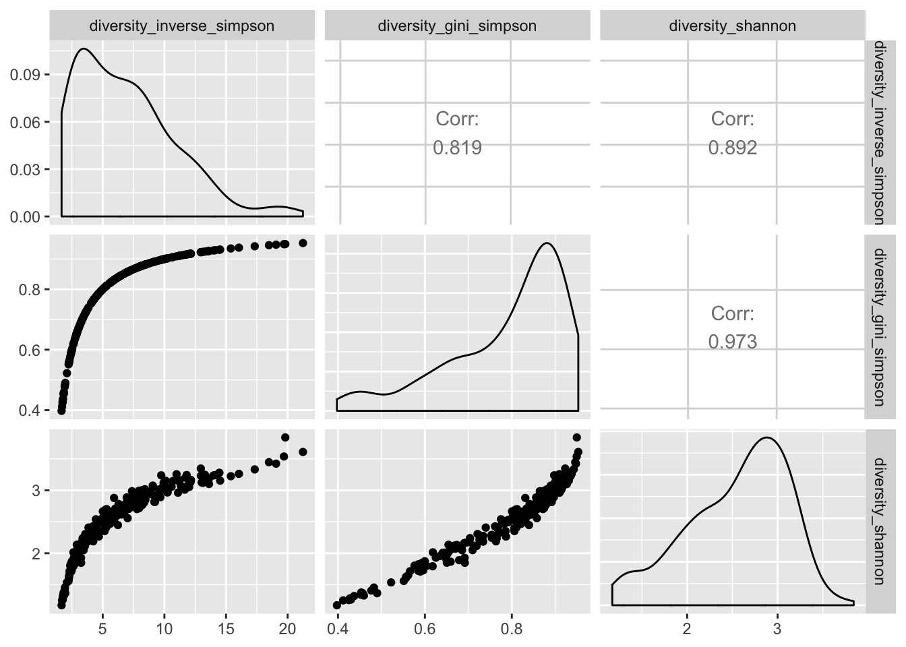
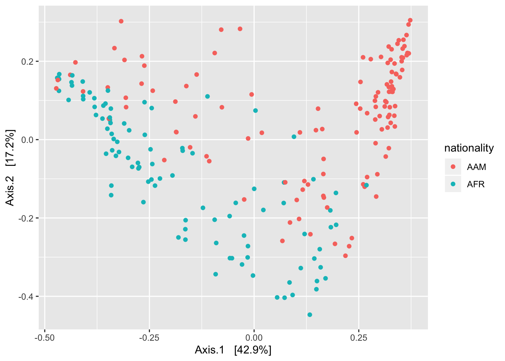
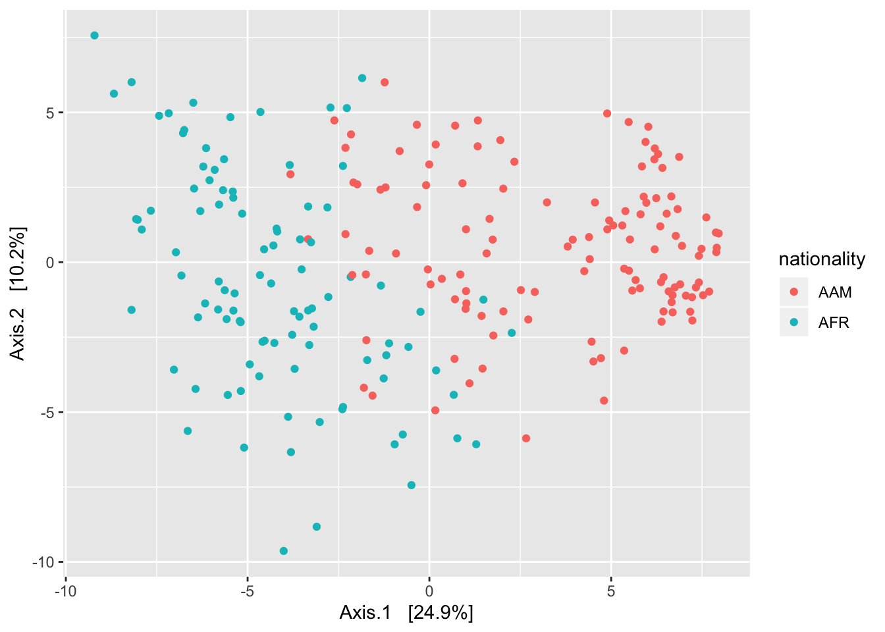
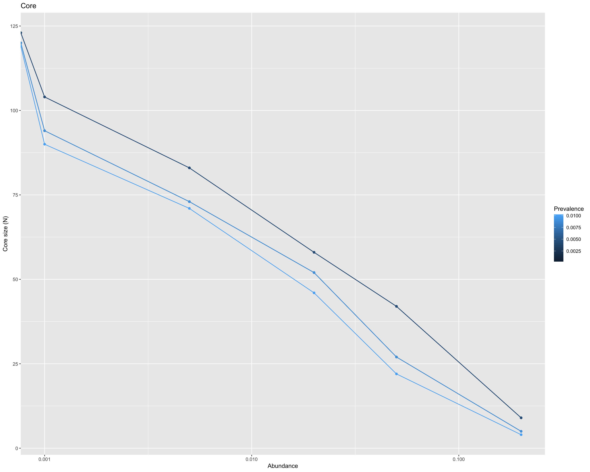
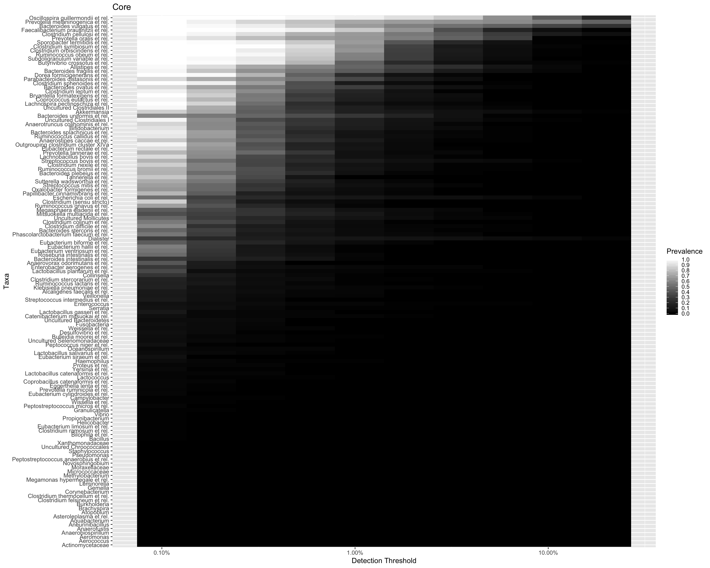
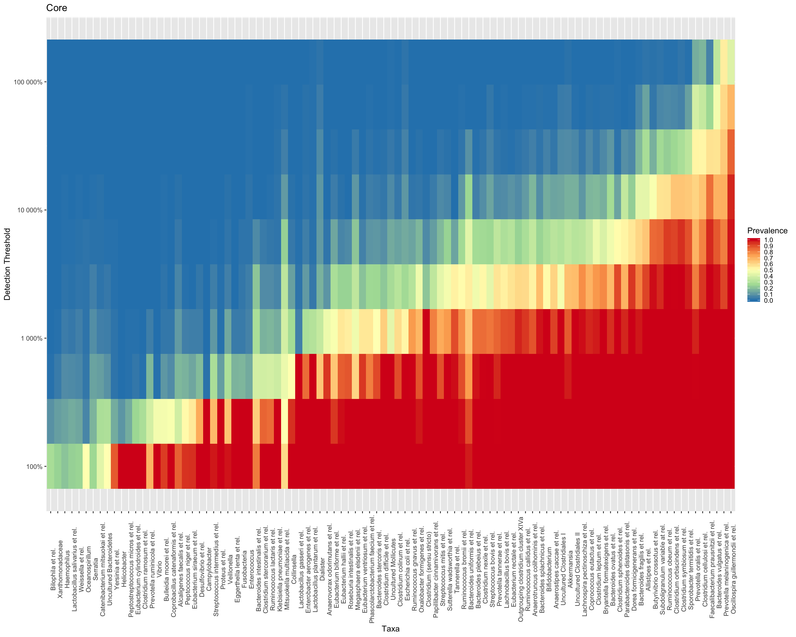
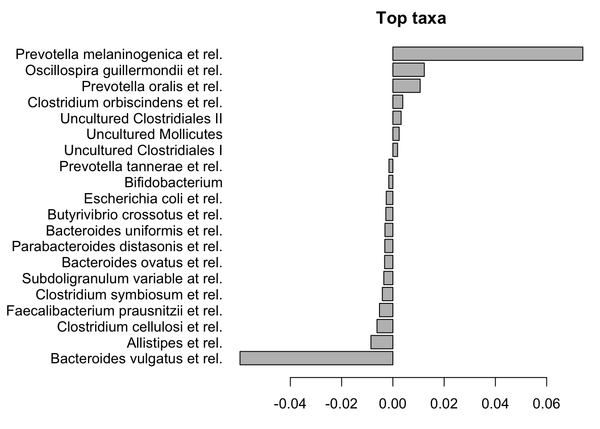
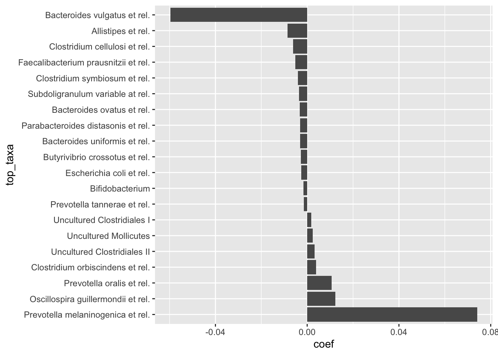

7 Hands-on 2: Key concepts and techniques
7.1 Part I: Key concepts
Before we can start with the exercises we need to load the required packages and the example data we work with:
# load required packages
library(tidyverse)
library(microbiome)
#load data
data(dietswap)
print(dietswap)## phyloseq-class experiment-level object
## otu_table() OTU Table: [ 130 taxa and 222 samples ]
## sample_data() Sample Data: [ 222 samples by 8 sample variables ]
## tax_table() Taxonomy Table: [ 130 taxa by 3 taxonomic ranks ]# rename the example data
pseq <- dietswap
# transform data for compositional analysis
pseq.rel <- microbiome::transform(pseq, transform = "compositional")
pseq.clr <- microbiome::transform(pseq, transform = "clr")- Alpha diversity Estimate taxonomic diversity for each sample (function microbiome::alpha). Compare the results between two or more diversity indices (visually or statistically). See microbiome tutorial for examples.
| observed | chao1 | diversity_inverse_simpson | diversity_gini_simpson | diversity_shannon | diversity_fisher | diversity_coverage | evenness_camargo | evenness_pielou | evenness_simpson | evenness_evar | evenness_bulla | dominance_dbp | dominance_dmn | dominance_absolute | dominance_relative | dominance_simpson | dominance_core_abundance | dominance_gini | rarity_log_modulo_skewness | rarity_low_abundance | rarity_rare_abundance | |
|---|---|---|---|---|---|---|---|---|---|---|---|---|---|---|---|---|---|---|---|---|---|---|
| Sample-1 | 104 | 114.6667 | 7.561722 | 0.8677550 | 2.940698 | 16.69360 | 4 | 0.2014036 | 0.6331719 | 0.0727089 | 0.1709714 | 0.3298916 | 0.3279347 | 0.4297198 | 2774 | 0.3279347 | 0.1322450 | 0.9992907 | 0.8625360 | 2.057691 | 0.0289632 | 0.0000000 |
| Sample-2 | 110 | 121.6364 | 8.102943 | 0.8765881 | 2.822472 | 15.20257 | 3 | 0.2261992 | 0.6004646 | 0.0736631 | 0.1334372 | 0.2755652 | 0.2428626 | 0.4656170 | 5121 | 0.2428626 | 0.1234119 | 0.9994309 | 0.8843695 | 2.057552 | 0.0299725 | 0.0004268 |
| Sample-3 | 103 | 107.5000 | 4.291085 | 0.7669587 | 2.407963 | 13.42077 | 2 | 0.2109176 | 0.5195476 | 0.0416610 | 0.1373098 | 0.2541325 | 0.4594744 | 0.5603989 | 13271 | 0.4594744 | 0.2330413 | 0.9999654 | 0.9083094 | 2.052324 | 0.0339646 | 0.0000000 |
| Sample-4 | 105 | 112.1429 | 7.930799 | 0.8739093 | 2.992482 | 15.56061 | 4 | 0.3422309 | 0.6429969 | 0.0755314 | 0.1711334 | 0.3176017 | 0.3230653 | 0.3957720 | 4279 | 0.3230653 | 0.1260907 | 0.9995470 | 0.8569405 | 2.051175 | 0.0348056 | 0.0002265 |
| Sample-5 | 103 | 110.6818 | 3.170738 | 0.6846160 | 2.106022 | 14.53671 | 1 | 0.1407817 | 0.4544002 | 0.0307839 | 0.1661081 | 0.2310307 | 0.5450144 | 0.6317579 | 9456 | 0.5450144 | 0.3153840 | 0.9998847 | 0.9212609 | 2.059634 | 0.0441499 | 0.0000000 |
| Sample-6 | 105 | 113.9091 | 2.953753 | 0.6614476 | 2.071136 | 14.55619 | 1 | 0.1709221 | 0.4450266 | 0.0281310 | 0.1625409 | 0.2308364 | 0.5693811 | 0.6430163 | 11243 | 0.5693811 | 0.3385524 | 0.9993923 | 0.9192203 | 2.059421 | 0.0375772 | 0.0000506 |
# let us select 3 indeces and see how they correlate:
# I use the function ggpairs from the package GGally, which you
# might need to install first:
if(!require(GGally)) {
install.packages("GGally")
}
tab.alpha %>%
select(
diversity_inverse_simpson,
diversity_gini_simpson,
diversity_shannon) %>%
GGally::ggpairs()
- Beta diversity Visualize community variation with PCoA
(examples).
Investigate the influence of the data transformations on
statistical analysis: Visualize community variation with PCoA
with the following options:
- Bray-Curtis distances for
compositional data;
- Euclidean distances for CLR-transformed data.
- Bray-Curtis distances for
compositional data;
# option 1: Bray Curtis
ord <- ordinate(pseq, method = "PCoA", distance = "bray")
plot_ordination(pseq, ord, color = "nationality")
# option 2: Euclidean distance for CLR transformed data
ord <- ordinate(pseq.clr, method = "PCoA", distance = "euclidean")
plot_ordination(pseq, ord, color = "nationality")
- Prevalence What is the most prevalent genus in the data (tip: microbiome::prevalence and sort)
| x | |
|---|---|
| Yersinia et rel. | 1.0000000 |
| Weissella et rel. | 1.0000000 |
| Vibrio | 1.0000000 |
| Veillonella | 1.0000000 |
| Uncultured Mollicutes | 1.0000000 |
| Uncultured Clostridiales II | 1.0000000 |
| Uncultured Clostridiales I | 1.0000000 |
| Tannerella et rel. | 1.0000000 |
| Sutterella wadsworthia et rel. | 1.0000000 |
| Subdoligranulum variable at rel. | 1.0000000 |
| Streptococcus mitis et rel. | 1.0000000 |
| Streptococcus intermedius et rel. | 1.0000000 |
| Streptococcus bovis et rel. | 1.0000000 |
| Sporobacter termitidis et rel. | 1.0000000 |
| Ruminococcus obeum et rel. | 1.0000000 |
| Ruminococcus lactaris et rel. | 1.0000000 |
| Ruminococcus gnavus et rel. | 1.0000000 |
| Ruminococcus callidus et rel. | 1.0000000 |
| Ruminococcus bromii et rel. | 1.0000000 |
| Roseburia intestinalis et rel. | 1.0000000 |
| Proteus et rel. | 1.0000000 |
| Propionibacterium | 1.0000000 |
| Prevotella tannerae et rel. | 1.0000000 |
| Prevotella oralis et rel. | 1.0000000 |
| Prevotella melaninogenica et rel. | 1.0000000 |
| Phascolarctobacterium faecium et rel. | 1.0000000 |
| Peptostreptococcus micros et rel. | 1.0000000 |
| Peptococcus niger et rel. | 1.0000000 |
| Parabacteroides distasonis et rel. | 1.0000000 |
| Papillibacter cinnamivorans et rel. | 1.0000000 |
| Oxalobacter formigenes et rel. | 1.0000000 |
| Outgrouping clostridium cluster XIVa | 1.0000000 |
| Oscillospira guillermondii et rel. | 1.0000000 |
| Oceanospirillum | 1.0000000 |
| Mitsuokella multiacida et rel. | 1.0000000 |
| Megasphaera elsdenii et rel. | 1.0000000 |
| Megamonas hypermegale et rel. | 1.0000000 |
| Lactococcus | 1.0000000 |
| Lactobacillus salivarius et rel. | 1.0000000 |
| Lactobacillus plantarum et rel. | 1.0000000 |
| Lactobacillus gasseri et rel. | 1.0000000 |
| Lachnospira pectinoschiza et rel. | 1.0000000 |
| Lachnobacillus bovis et rel. | 1.0000000 |
| Klebisiella pneumoniae et rel. | 1.0000000 |
| Helicobacter | 1.0000000 |
| Fusobacteria | 1.0000000 |
| Faecalibacterium prausnitzii et rel. | 1.0000000 |
| Eubacterium ventriosum et rel. | 1.0000000 |
| Eubacterium siraeum et rel. | 1.0000000 |
| Eubacterium rectale et rel. | 1.0000000 |
| Eubacterium limosum et rel. | 1.0000000 |
| Eubacterium hallii et rel. | 1.0000000 |
| Eubacterium cylindroides et rel. | 1.0000000 |
| Eubacterium biforme et rel. | 1.0000000 |
| Escherichia coli et rel. | 1.0000000 |
| Enterococcus | 1.0000000 |
| Enterobacter aerogenes et rel. | 1.0000000 |
| Eggerthella lenta et rel. | 1.0000000 |
| Dorea formicigenerans et rel. | 1.0000000 |
| Dialister | 1.0000000 |
| Desulfovibrio et rel. | 1.0000000 |
| Corynebacterium | 1.0000000 |
| Coprococcus eutactus et rel. | 1.0000000 |
| Coprobacillus catenaformis et rel. | 1.0000000 |
| Collinsella | 1.0000000 |
| Clostridium symbiosum et rel. | 1.0000000 |
| Clostridium stercorarium et rel. | 1.0000000 |
| Clostridium sphenoides et rel. | 1.0000000 |
| Clostridium ramosum et rel. | 1.0000000 |
| Clostridium orbiscindens et rel. | 1.0000000 |
| Clostridium nexile et rel. | 1.0000000 |
| Clostridium leptum et rel. | 1.0000000 |
| Clostridium difficile et rel. | 1.0000000 |
| Clostridium colinum et rel. | 1.0000000 |
| Clostridium cellulosi et rel. | 1.0000000 |
| Clostridium (sensu stricto) | 1.0000000 |
| Campylobacter | 1.0000000 |
| Butyrivibrio crossotus et rel. | 1.0000000 |
| Bulleidia moorei et rel. | 1.0000000 |
| Bryantella formatexigens et rel. | 1.0000000 |
| Bilophila et rel. | 1.0000000 |
| Bifidobacterium | 1.0000000 |
| Bacteroides vulgatus et rel. | 1.0000000 |
| Bacteroides uniformis et rel. | 1.0000000 |
| Bacteroides stercoris et rel. | 1.0000000 |
| Bacteroides splachnicus et rel. | 1.0000000 |
| Bacteroides plebeius et rel. | 1.0000000 |
| Bacteroides ovatus et rel. | 1.0000000 |
| Bacteroides fragilis et rel. | 1.0000000 |
| Bacillus | 1.0000000 |
| Anaerovorax odorimutans et rel. | 1.0000000 |
| Anaerotruncus colihominis et rel. | 1.0000000 |
| Anaerostipes caccae et rel. | 1.0000000 |
| Allistipes et rel. | 1.0000000 |
| Alcaligenes faecalis et rel. | 1.0000000 |
| Akkermansia | 1.0000000 |
| Prevotella ruminicola et rel. | 0.9909910 |
| Bacteroides intestinalis et rel. | 0.9774775 |
| Uncultured Bacteroidetes | 0.8963964 |
| Xanthomonadaceae | 0.7297297 |
| Catenibacterium mitsuokai et rel. | 0.6981982 |
| Burkholderia | 0.5720721 |
| Haemophilus | 0.4369369 |
| Serratia | 0.4234234 |
| Leminorella | 0.2297297 |
| Moraxellaceae | 0.2162162 |
| Uncultured Selenomonadaceae | 0.1891892 |
| Lactobacillus catenaformis et rel. | 0.1801802 |
| Atopobium | 0.1261261 |
| Aquabacterium | 0.1081081 |
| Brachyspira | 0.0810811 |
| Granulicatella | 0.0720721 |
| Actinomycetaceae | 0.0720721 |
| Staphylococcus | 0.0675676 |
| Wissella et rel. | 0.0630631 |
| Pseudomonas | 0.0405405 |
| Anaerofustis | 0.0360360 |
| Uncultured Chroococcales | 0.0180180 |
| Gemella | 0.0180180 |
| Aeromonas | 0.0090090 |
| Peptostreptococcus anaerobius et rel. | 0.0045045 |
| Novosphingobium | 0.0045045 |
| Anaerobiospirillum | 0.0045045 |
| Micrococcaceae | 0.0000000 |
| Methylobacterium | 0.0000000 |
| Clostridium thermocellum et rel. | 0.0000000 |
| Clostridium felsineum et rel. | 0.0000000 |
| Asteroleplasma et rel. | 0.0000000 |
| Aneurinibacillus | 0.0000000 |
| Aerococcus | 0.0000000 |
- Core microbiota Pick up the core microbiota including taxa that exceed 0.1% relative abundance in over 50% of the samples (prevalence). How many core taxa there are? You can read more about the core microbiota definition in Salonen et al. 2012. Visualize the core microbiota by following the available examples.
pseq.core <- core(pseq.rel, detection = 0.001, prevalence = 0.5)
# how many taxa are there?
taxa(pseq.core) %>% length()## [1] 52# vizualize core microbiota
# core line plots
detections <- c(0, 0.1, 0.5, 2, 5, 20)/100
prevalences <- seq(0.05, 1, 0.05)
plot_core(pseq.rel, prevalences = prevalences, detections = detections, plot.type = "lineplot")
# core heatmaps
prevalences <- seq(0.05, 1, 0.05)
detections <- 10^seq(log10(1e-3), log10(0.2), length = 10)
# define gray color palette
gray <- gray(seq(0, 1, length = 5))
p <- plot_core(
pseq.rel,
plot.type = "heatmap",
colours = gray,
prevalences = prevalences,
detections = detections)
print(p)
# Core with absolute counts and horizontal view:
# and minimum population prevalence (given as percentage)
detections <- 10^seq(log10(1), log10(max(abundances(pseq))/10), length = 10)
library(RColorBrewer)
p <- plot_core(pseq,
plot.type = "heatmap",
prevalences = prevalences,
detections = detections,
colours = rev(brewer.pal(5, "Spectral")),
min.prevalence = .2,
horizontal = TRUE)
print(p)
7.2 Part II: Statistical testing
- Community-level comparisons Use PERMANOVA to investigate whether the community composition differs between two groups of individuals (e.g. males and females, or some other grouping of your choice). You can also include covariates such as age and gender, and see how this affects the results.
# to perform PERMANOVA we need vegan
library(vegan)
# extract relative abundances and meta data
otu.relative <- abundances(pseq.rel)
meta <- meta(pseq.rel)
# Before we perform PERMANOVA we must test the assumption
# that the multivariate spread between the groups is similar.
dist <- vegdist(t(otu.relative))
# in this specific case the assumption is not met for bmi_group
betadisper(dist, meta$bmi_group) %>%
anova() %>%
kable()| Df | Sum Sq | Mean Sq | F value | Pr(>F) | |
|---|---|---|---|---|---|
| Groups | 2 | 0.1789275 | 0.0894637 | 7.699571 | 0.0005867 |
| Residuals | 219 | 2.5446297 | 0.0116193 | NA | NA |
# perform PERMANOVA
pm <- adonis(
t(otu.relative) ~ bmi_group,
data = meta,
permutations = 99,
method = "bray"
)
# to obtain the effect size and the F-test p-value:| Df | SumsOfSqs | MeanSqs | F.Model | R2 | Pr(>F) | |
|---|---|---|---|---|---|---|
| bmi_group | 2 | 2.260931 | 1.1304655 | 7.167585 | 0.061436 | 0.01 |
| Residuals | 219 | 34.540499 | 0.1577192 | NA | 0.938564 | NA |
| Total | 221 | 36.801430 | NA | NA | 1.000000 | NA |
# to investigate the top factors
coef <- coefficients(pm)["bmi_group1", ]
# with base R
top.coef <- coef[rev(order(abs(coef)))[1:20]]
par(mar = c(3, 14, 2, 1))
barplot(sort(top.coef), horiz = T, las = 1, main = "Top taxa")
# with ggplot
coef %>% as.data.frame() %>% # convert to dataframe
rownames_to_column("taxa") %>% # add the rownames as a column for plotting
select(taxa, coef = ".") %>% # select and rename the columns
arrange(desc(abs(coef))) %>% # sort by absolute value
head(20) %>% # pick 20 highest coefficients
arrange(desc(coef)) %>% # sort by value
mutate(top_taxa = factor(taxa, levels = taxa)) %>% # for ggplot to keep order we need factor
ggplot(aes(top_taxa, coef)) + # plot
geom_bar(stat = "identity") +
coord_flip()
- OTU-level comparisons Use DESeq2 to identify which genera are associated with gender differences (examples on DESeq2). For more explanation on the method, see DESeq2 R/Bioconductor.
library(DESeq2)
# start by converting phyloseq object to deseq2 format
ds2 <- phyloseq_to_deseq2(pseq, ~group + nationality)
# Run DeSeq2 analysis (all taxa at once!)
dds <- DESeq(ds2)
# Investigate results
res <- results(dds)
df <- as.data.frame(res) %>%
rownames_to_column("taxon") %>%
arrange(log2FoldChange, padj)
df %>% filter(pvalue < 0.05 & log2FoldChange > 1.5) %>%
arrange(pvalue, log2FoldChange) %>%
mutate_if(is.numeric, round, 3) %>% # round to 3 decimal places
kable()| taxon | baseMean | log2FoldChange | lfcSE | stat | pvalue | padj |
|---|---|---|---|---|---|---|
| Clostridium difficile et rel. | 29.205 | 1.912 | 0.134 | 14.235 | 0 | 0.000 |
| Mitsuokella multiacida et rel. | 51.652 | 3.041 | 0.287 | 10.601 | 0 | 0.000 |
| Klebisiella pneumoniae et rel. | 12.397 | 1.838 | 0.185 | 9.920 | 0 | 0.000 |
| Megasphaera elsdenii et rel. | 44.165 | 1.783 | 0.231 | 7.729 | 0 | 0.000 |
| Escherichia coli et rel. | 66.938 | 1.683 | 0.253 | 6.646 | 0 | 0.000 |
| Weissella et rel. | 3.635 | 1.531 | 0.231 | 6.618 | 0 | 0.000 |
| Serratia | 5.740 | 3.073 | 0.478 | 6.423 | 0 | 0.000 |
| Moraxellaceae | 0.422 | 1.701 | 0.471 | 3.607 | 0 | 0.001 |
Role of covariates Note that including key covariates (diet, medication, age..) may have remarkable influence on data interpretation in the above analyses (Falony et al. Science 2016)
Experiment with the other available tools in the microbiome tutorial
Provide a compact summary of the data and analyses in the form of a reproducible Rmarkdown report. Include only selected summaries and analyses of your choice, and focus on delivering a clear and compact report.